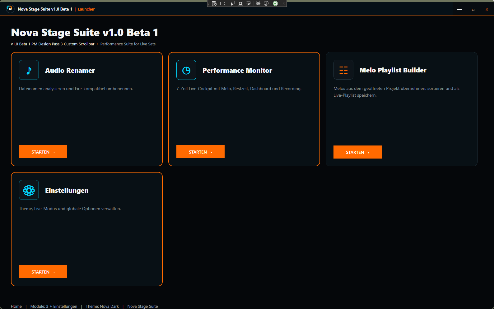
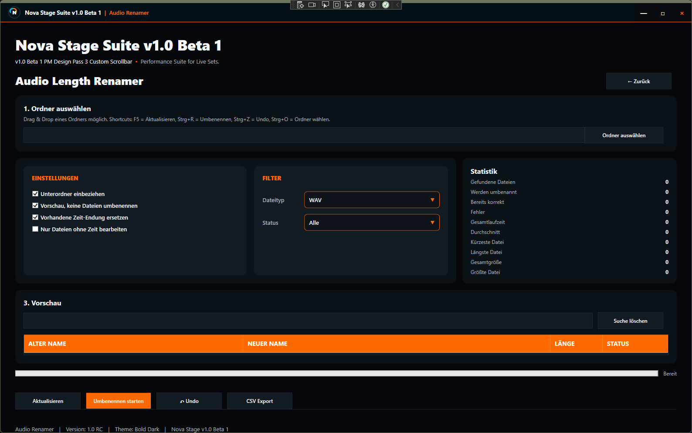
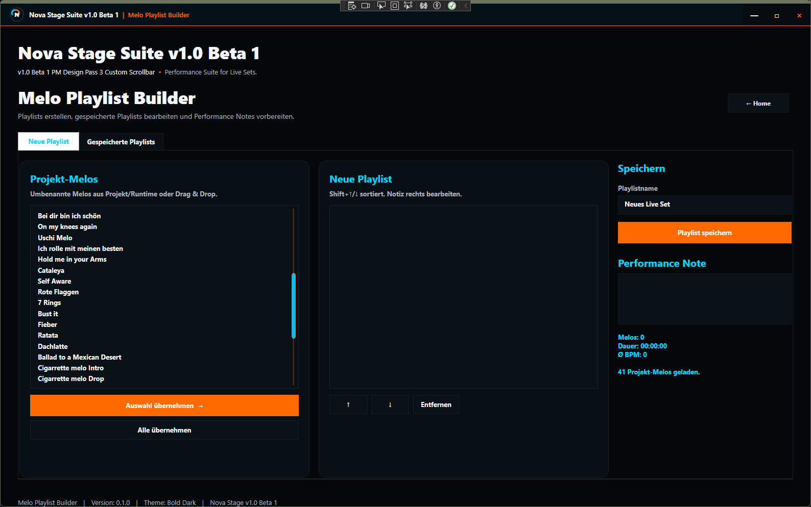

🚀
Launcher
Der zentrale Einstiegspunkt. Von hier aus lassen sich alle Module starten und verwalten.
DetailsDie Nova Stage Suite besteht aus mehreren Modulen, die perfekt zusammenarbeiten: Launcher, Audio Renamer, Performance Monitor, Melo Playlist Builder und Controller-Unterstützung.

Module
Alle Inhalte basieren auf dem aktuellen Funktionsumfang der Nova Stage Suite.
Der zentrale Einstiegspunkt. Von hier aus lassen sich alle Module starten und verwalten.
DetailsOrganisiert Projekte automatisch: Samples erkennen, Melos umbenennen, BPM und Laufzeit ergänzen.
DetailsZeigt aktuelle Melo, nächste Melo, BPM, Projektname, Controllerstatus, Playliststatus und Notes.
DetailsErstellt Playlists direkt aus deinem FL-Studio-Projekt inklusive Drag & Drop und Performance Notes.
DetailsUnterstützung für Akai FL Studio Fire, APC Mini MK2 und No Controller Mode.
DetailsDie Suite funktioniert auch komplett ohne Hardware mit Performance Monitor, Playlist Builder und Melo Export.
DetailsWorkflow
Alle Module über den Launcher öffnen und verwalten.
Audio Renamer bereitet Projekte und Namen vor.
Melos aus FL Studio auslesen, sortieren und bearbeiten.
Performance Monitor und Controller-Status während des Sets nutzen.

Launcher
Von hier aus lassen sich alle Module starten und verwalten.
Audio Renamer


Melo Playlist Builder
Community
Erhalte Beta-Updates, melde Fehler, teile Funktionswünsche und tausche dich mit anderen Produzenten und Live-Performern aus.